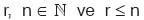
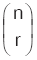
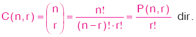
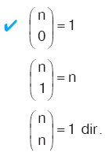
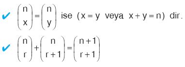
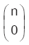
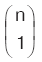
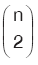
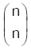
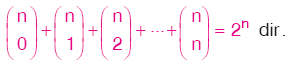

KOMBİNASYON
Bu ders notumuzda bir çok sınavda karşımıza çıkan Matematik Kombinasyon konusunun geniş konu anlatımını, konun önemli yerlerini bulabilirsiniz.
KOMBİNASYON (GRUPLAMA)
olmak koşuluyla, n elemanlı bir A kümesinin r elemanlı alt kümelerinin her birine, A kümesinin r li kombinasyonu denir.
n elemanlı kümenin r li kombinasyonlarının sayısı, K(n, r), Crn ya da  ile gösterilir.
n elemanlı kümenin r li kombinasyonlarının sayısı:

Kural
|   |
Kural
| n £ N olmak üzere, n elemanlı sonlu bir kümenin;0 elemanlı alt kümelerinin sayısı :  1 elemanlı alt kümelerinin sayısı :  2 elemanlı alt kümelerinin sayısı:  n elemanlı alt kümelerinin sayısı:  olduğundan tüm alt kümelerinin sayısı:  |